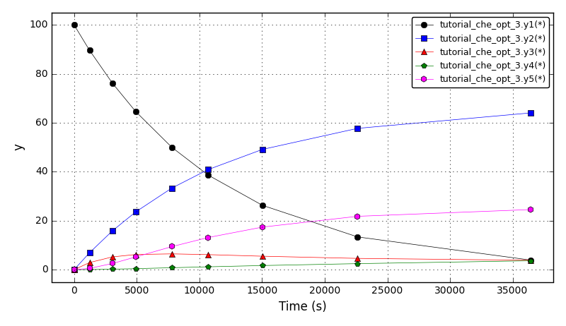
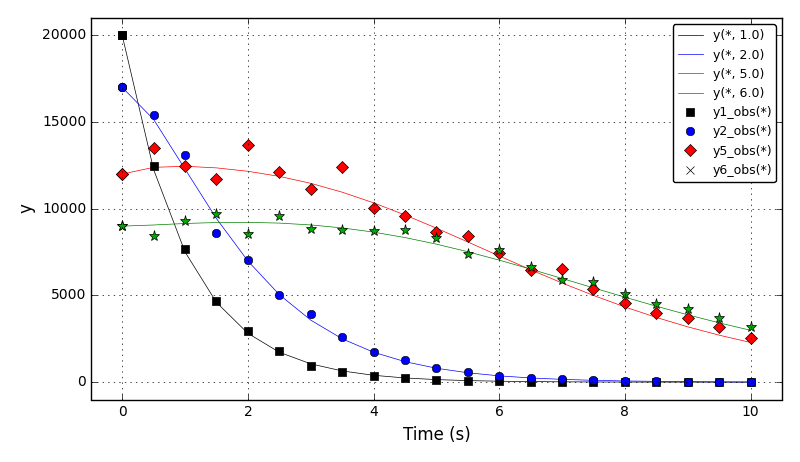
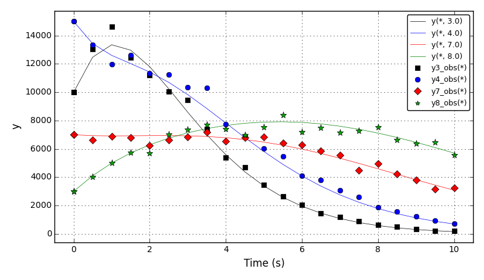
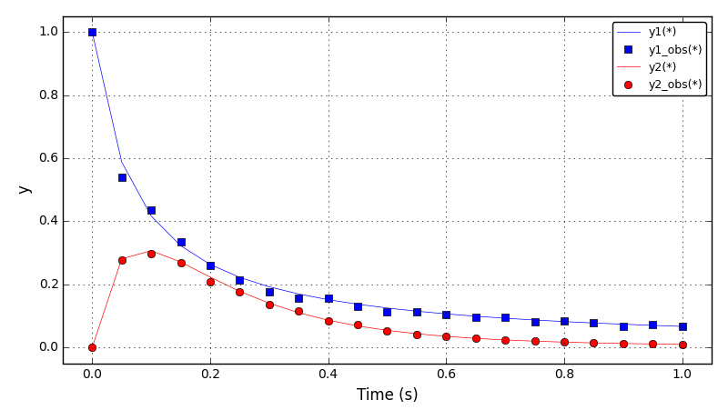
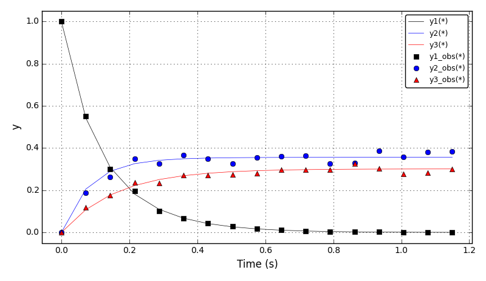
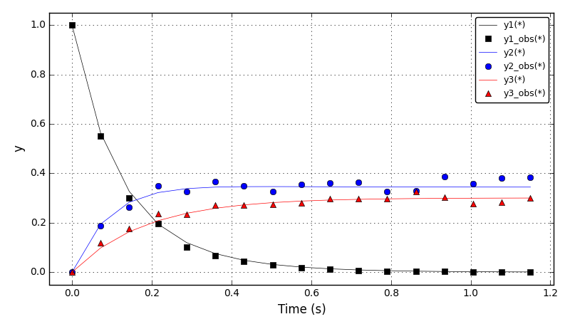
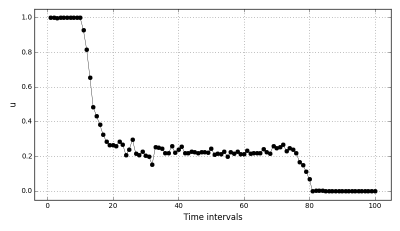
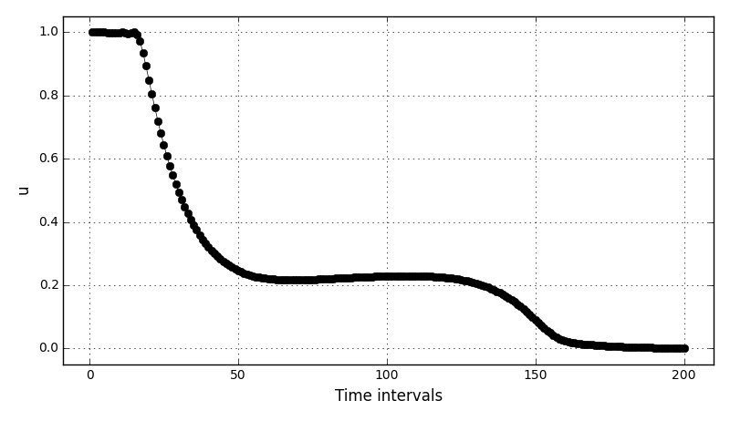

| Chem. Eng. Optimisation Example 1 | Optimisation of the CSTR with energy balance and Van de Vusse reactions (not fully implemented yet). |
| Chem. Eng. Optimisation Example 2 | COPS test 5 (parameter estimation): Determination of the reaction coefficients in the thermal isometrization of α-pinene. |
| Chem. Eng. Optimisation Example 3 | COPS test 6 (parameter estimation): Determine stage specific growth and mortality rates for species at each stage as a function of time. |
| Chem. Eng. Optimisation Example 4 | COPS test 12 (parameter estimation): Determination of the reaction coefficients for the catalytic cracking of gas oil and other byproducts. |
| Chem. Eng. Optimisation Example 5 | COPS test 13 (parameter estimation): Determination of the reaction coefficients for the conversion of methanol into various hydrocarbons. |
| Chem. Eng. Optimisation Example 6 | COPS test 14 (optimal control): Catalyst mixing in a tubular plug flow reactor. |
The implementations of the COPS tests differ from the original ones in following:
As a consequence, the results slightly differ from the published results. In addition, the solver options should be tuned to achieve faster convergence.
Optimisation of the CSTR model and Van de Vusse reactions given in tutorial_che_1:
Not fully implemented yet.
Reference: G.A. Ridlehoover, R.C. Seagrave. Optimization of Van de Vusse Reaction Kinetics Using Semibatch Reactor Operation, Ind. Eng. Chem. Fundamen. 1973;12(4):444-447. doi:10.1021/i160048a700
Files
| Model report | tutorial_che_opt_1.xml |
| Runtime model report | tutorial_che_opt_1-rt.xml |
| Source code | tutorial_che_opt_1.py |
COPS test 5: Isomerization of α-pinene (parameter estimation of a dynamic system).
Very slow convergence.
Determine the reaction coefficients in the thermal isometrization of α-pinene (y1) to dipentene (y2) and allo-ocimen (y3) which in turn produces α- and β-pyronene (y4) and a dimer (y5).
Reference: Benchmarking Optimization Software with COPS 3.0, Mathematics and Computer Science Division, Argonne National Laboratory, Technical Report ANL/MCS-273, 2004. PDF
Experimental data taken from: Rocha A.M.A.C., Martins M.C., Costa M.F.P., Fernandes, E.M.G.P. (2016) Direct sequential based firefly algorithm for the α-pinene isomerization problem. 16th International Conference on Computational Science and Its Applications, ICCSA 2016, Beijing, China. doi:10.1007/978-3-319-42085-1_30
Run options:
Currently, the parameter estimation results are (solver options/scaling should be tuned):
Fobj 57.83097
p1 5.63514e-05
p2 2.89711e-05
p3 1.39979e-05
p4 18.67874e-05
p5 2.23770e-05
The concentration plots (for optimal ‘p’ from the literature):
Files
| Model report | tutorial_che_opt_2.xml |
| Runtime model report | tutorial_che_opt_2-rt.xml |
| Source code | tutorial_che_opt_2.py |
COPS test 6: Marine Population Dynamics. (Not working properly)
Given estimates of the abundance of the population of a marine species at each stage (for example, nauplius, juvenile, adult) as a function of time, determine stage specific growth and mortality rates.
Reference: Benchmarking Optimization Software with COPS 3.0, Mathematics and Computer Science Division, Argonne National Laboratory, Technical Report ANL/MCS-273, 2004. PDF
Experimental data generated following the procedure described in the COPS test.
Run options:
Currently, the parameter estimation results are (suboptimal results obtained, solver options/scaling should be tuned):
Fobj = 1.920139e+8
m(0) 3.358765e-01
m(1) 4.711709e-01
m(2) 1.120524e-01
m(3) 8.509170e-02
m(4) 9.683579e-02
m(5) 1.919142e-01
m(6) 2.418778e-01
m(7) 2.421000e-01
g(0) 1.152995e+00
g(1) 7.529383e-01
g(2) 5.024174e-01
g(3) 5.704327e-01
g(4) 4.180333e-01
g(5) 3.185407e-01
g(6) 2.250250e-01
The distribution moments 1,2,5,6 plots (for optimal results from the literature):
The distribution moments 3,4,7,8 plots (for optimal results from the literature):
Files
| Model report | tutorial_che_opt_3.xml |
| Runtime model report | tutorial_che_opt_3-rt.xml |
| Source code | tutorial_che_opt_3.py |
COPS test 12: Catalytic Cracking of Gas Oil.
Determine the reaction coefficients for the catalytic cracking of gas oil into gas and other byproducts.
Reference: Benchmarking Optimization Software with COPS 3.0, Mathematics and Computer Science Division, Argonne National Laboratory, Technical Report ANL/MCS-273, 2004. PDF
Experimental data generated following the procedure described in the COPS test.
Run options:
Currently, the parameter estimation results are (solver options/scaling should be tuned):
Fobj = 4.841995e-3
p1 = 10.95289
p2 = 7.70601
p3 = 2.89625
The concentration plots (for optimal ‘p’ from the literature):
Files
| Model report | tutorial_che_opt_4.xml |
| Runtime model report | tutorial_che_opt_4-rt.xml |
| Source code | tutorial_che_opt_4.py |
COPS test 13: Methanol to Hydrocarbons.
Determine the reaction coefficients for the conversion of methanol into various hydrocarbons.
Reference: Benchmarking Optimization Software with COPS 3.0, Mathematics and Computer Science Division, Argonne National Laboratory, Technical Report ANL/MCS-273, 2004. PDF
Experimental data generated following the procedure described in the COPS test.
Run options:
Currently, the parameter estimation results are (solver options/scaling should be tuned):
Fobj = 1.274997e-2
p1 = 2.641769
p2 = 1.466245
p3 = 1.884254
p4 = 1.023885
p5 = 0.471067
The concentration plots (for optimal ‘p’ from the literature):
The concentration plots (for optimal ‘p’ from this optimisation):
Files
| Model report | tutorial_che_opt_5.xml |
| Runtime model report | tutorial_che_opt_5-rt.xml |
| Source code | tutorial_che_opt_5.py |
COPS optimisation test 14: Catalyst Mixing.
Determine the optimal mixing policy of two catalysts along the length of a tubular plug flow reactor involving several reactions.
Reference: Benchmarking Optimization Software with COPS 3.0, Mathematics and Computer Science Division, Argonne National Laboratory, Technical Report ANL/MCS-273, 2004. PDF
In DAE Tools numerical solution of dynamic optimisation problems is obtained using the Direct Sequential Approach where, given a set of values for the decision variables, the system of ODEs are accurately integrated over the entire time interval using specific numerical integration formulae so that the objective functional can be evaluated. Therefore, the differential equations are satisfied at each iteration of the optimisation procedure.
In the COPS test, the problem is solved using the Direct Simultaneous Approach where the equations that result from a discretisation of an ODE model using orthogonal collocation on finite elements (OCFE), are incorporated directly into the optimisation problem, and the combined problem is then solved using a large-scale optimisation strategy.
The results: fobj = -4.79479E-2 (for Nh = 100) and -4.78676E-02 (for Nh = 200).
The control variables plot (for Nh = 100):
The control variables plot (for Nh = 200):
Files
| Model report | tutorial_che_opt_6.xml |
| Runtime model report | tutorial_che_opt_6-rt.xml |
| Source code | tutorial_che_opt_6.py |

{kind=link}
{kind=link}
{kind=link}
{kind=link}
{kind=link}
{kind=link}
{kind=link}
{kind=link}